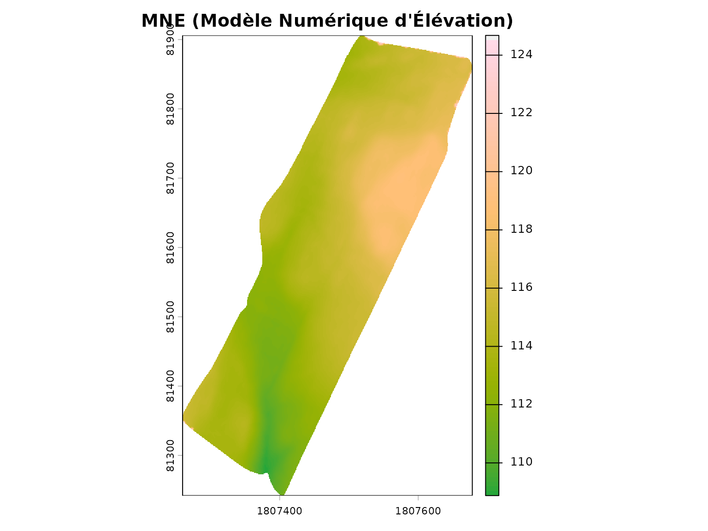
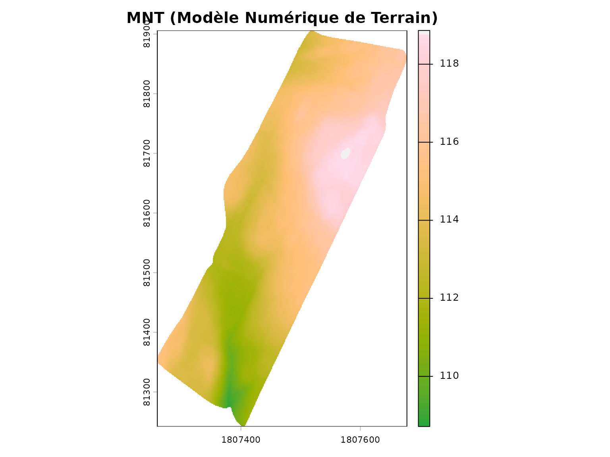
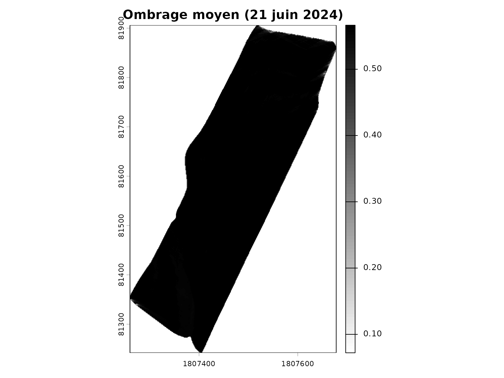
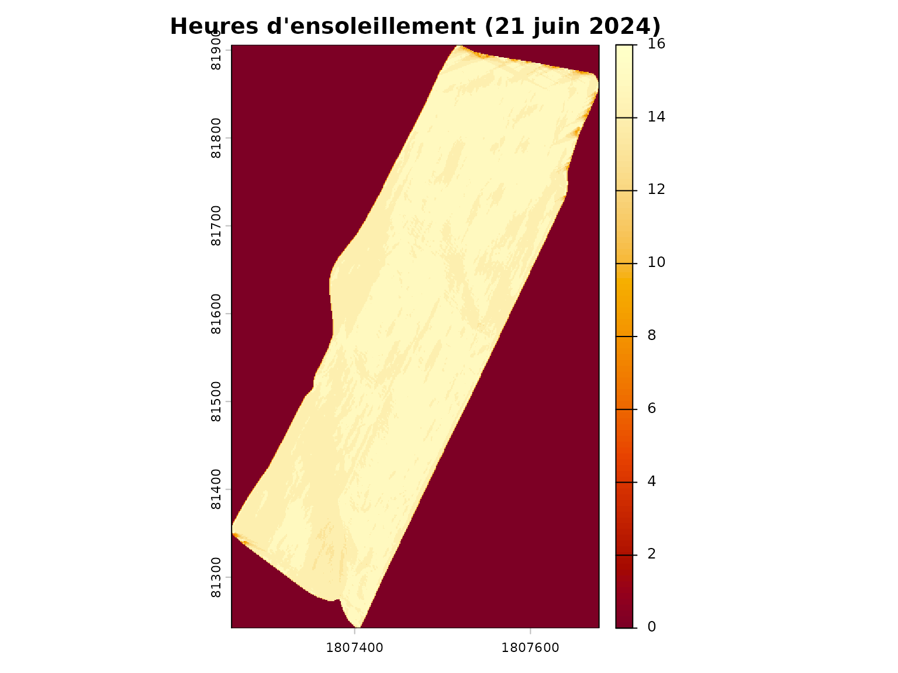
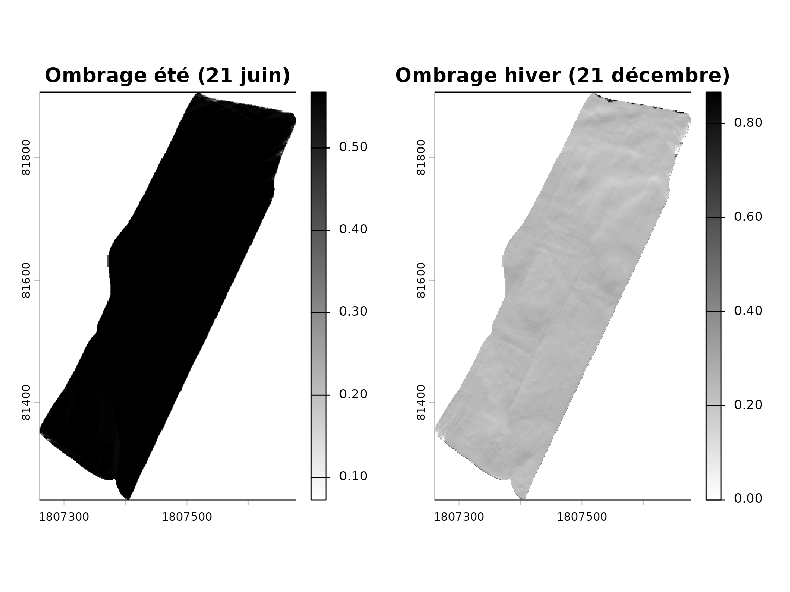
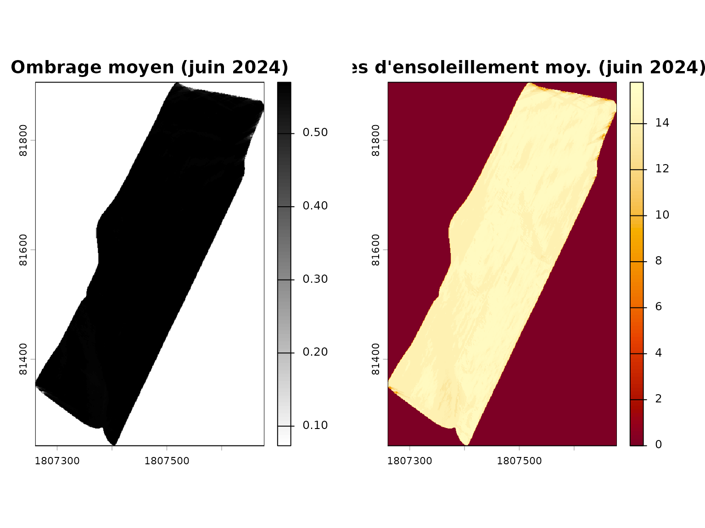

Introduction
L’ombrage projeté par les arbres et les haies sur les parcelles
agricoles peut avoir un impact significatif sur les cultures. Ce guide
présente les fonctions du package covariablechamps pour
calculer et visualiser l’ombrage à partir des données LiDAR et de la
position du soleil.
Principes de base
Le calcul de l’ombrage repose sur:
- Le Modèle Numérique d’Élévation (MNE): Inclut les arbres et structures
- La position du soleil: Azimut et élévation selon la date et l’heure
- Le raycasting: Projection des ombres selon l’angle du soleil
Chargement du champ M2
Le package inclut un champ d’exemple (M2) situé au
Québec.
champ <- st_read(system.file("extdata", "M2.shp", package = "covariablechamps"))
#> Reading layer `M2' from data source
#> `/home/runner/work/_temp/Library/covariablechamps/extdata/M2.shp'
#> using driver `ESRI Shapefile'
#> Simple feature collection with 1 feature and 65 fields
#> Geometry type: POLYGON
#> Dimension: XY
#> Bounding box: xmin: -71.06012 ymin: 46.64605 xmax: -71.05268 ymax: 46.65118
#> Geodetic CRS: WGS 84Téléchargement du MNE (Modèle Numérique d’Élévation)
Le MNE inclut les arbres et permet de calculer les ombres projetées.
Note: Le téléchargement peut prendre quelques minutes.
# Télécharger le MNE (avec arbres)
mne <- telecharger_lidar(
polygone = champ,
mne = TRUE
)
plot(mne, main = "MNE (Modèle Numérique d'Élévation)",
col = hcl.colors(100, "Terrain"))
plot(sf::st_geometry(champ), add = TRUE, border = "black", lwd = 2)
Téléchargement du MNT (Modèle Numérique de Terrain)
Le MNT est le terrain sans les arbres (sol nu).
mnt <- telecharger_lidar(
polygone = champ,
mne = FALSE
)
plot(mnt, main = "MNT (Modèle Numérique de Terrain)",
col = hcl.colors(100, "Terrain"))
plot(sf::st_geometry(champ), add = TRUE, border = "black", lwd = 2)
Calcul de l’ombrage
Pour calculer l’ombrage à une date donnée:
ombrage <- calculer_ombrage(
polygone = champ,
date = "2024-06-21",
intervalle_heures = 1
)
plot(ombrage$ombrage_moyen, main = "Ombrage moyen (21 juin 2024)",
col = grey(100:0 / 100))
plot(sf::st_geometry(champ), add = TRUE, border = "black", lwd = 2)
Heures d’ensoleillement
Le nombre d’heures d’ensoleillement par pixel:
plot(ombrage$heures_ensoleillement,
main = "Heures d'ensoleillement (21 juin 2024)",
col = hcl.colors(100, "YlOrRd"))
plot(sf::st_geometry(champ), add = TRUE, border = "black", lwd = 2)
Comparaison été vs hiver
L’ombrage varie considérablement selon la saison:
# Été
ombrage_ete <- calculer_ombrage(
polygone = champ,
date = "2024-06-21",
intervalle_heures = 2
)
# Hiver
ombrage_hiver <- calculer_ombrage(
polygone = champ,
date = "2024-12-21",
intervalle_heures = 2
)
par(mfrow = c(1, 2), mar = c(3, 3, 3, 3))
plot(ombrage_ete$ombrage_moyen, main = "Ombrage été (21 juin)",
col = grey(100:0 / 100))
plot(sf::st_geometry(champ), add = TRUE, border = "black", lwd = 2)
plot(ombrage_hiver$ombrage_moyen, main = "Ombrage hiver (21 décembre)",
col = grey(100:0 / 100))
plot(sf::st_geometry(champ), add = TRUE, border = "black", lwd = 2)
Calcul sur une période
La fonction calculer_ombrage_periode() calcule l’ombrage
moyen sur une période:
resultat <- calculer_ombrage_periode(
polygone = champ,
date_debut = "2024-06-01",
date_fin = "2024-06-30",
intervalle_jours = 7
)
par(mfrow = c(1, 2), mar = c(3, 3, 3, 3))
plot(resultat$ombrage_moyen_periode,
main = "Ombrage moyen (juin 2024)",
col = grey(100:0 / 100))
plot(sf::st_geometry(champ), add = TRUE, border = "black", lwd = 2)
plot(resultat$heures_ensoleillement_moyen,
main = "Heures d'ensoleillement moy. (juin 2024)",
col = hcl.colors(100, "YlOrRd"))
plot(sf::st_geometry(champ), add = TRUE, border = "black", lwd = 2)